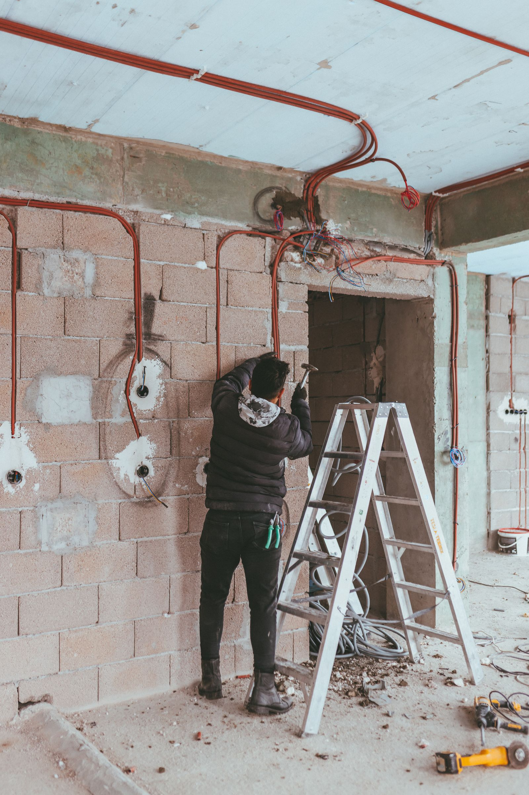
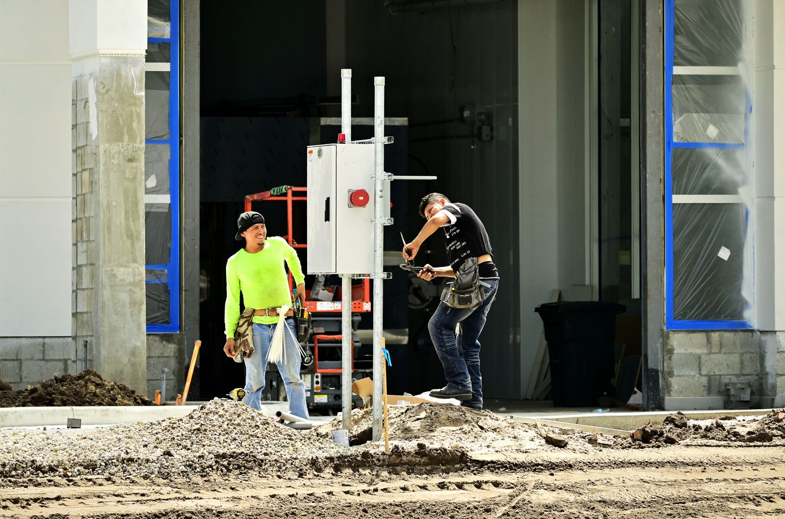

Alapszerelés
Új lakások és családi házak elektromos rendszerének teljes kiépítése terv vagy helyszíni egyeztetés alapján.
- Kiállások kiosztása
- Áramkörök megtervezése
- Elosztó előkészítése


Teljes körű villanyszerelés
Új építés, teljes felújítás és precíz hibajavítás — az első horonymarástól az utolsó kapcsolóig.
Komplett elektromos kivitelezés
Horonymarás. Csövezés. Kábelezés. Szerelvényezés. Bekötés. Egyetlen átgondolt rendszerben.
Kérj helyszíni felmérést →Nem csak áramot vezetünk
Egy jól kivitelezett elektromos rendszer évtizedekig észrevétlenül teszi a dolgát. Ehhez pontos tervezés, tiszta nyomvonalak és kompromisszummentes szerelés kell.
Új lakások és családi házak teljes alapszerelését, meglévő hálózatok felújítását, hibakeresését és konyhai készülékek szakszerű bekötését is vállaljuk.
Ismerj meg minket ↗01 / Szolgáltatások
Teljes körű villanyszerelési megoldások új építéshez, felújításhoz és a mindennapi elektromos problémákhoz.
Új lakások és családi házak elektromos rendszerének teljes kiépítése terv vagy helyszíni egyeztetés alapján.
Pontos, logikus nyomvonalak kialakítása, védőcsövek és szerelvénydobozok szakszerű elhelyezése.
Erős- és gyengeáramú vezetékek rendezett behúzása, jelölése és áramkörönkénti elosztása.
Kapcsolók, dugaljak, lámpatestek és egyéb elektromos szerelvények pontos beépítése.
Biztosítéktábla kialakítása, védelmi készülékek bekötése és mérőhelyi munkák egyeztetés szerint.
Régi alumínium vagy elavult hálózat bontása és korszerű, bővíthető rendszer kiépítése.
Zárlatok, leoldások, melegedő kötések és működésképtelen áramkörök műszeres feltárása.
Főzőlapok, sütők, elszívók és más nagy teljesítményű konyhai berendezések szakszerű csatlakoztatása.
Munka közben
A látható rész csak az utolsó tíz százalék. A minőség a pontos nyomvonalban, a rendezett kábelezésben és az ellenőrzött kötésekben van.
Nézd meg a munkáinkat02 / Folyamat
Minden projektet felméréssel és tiszta műszaki tartalommal indítunk, így pontosan tudod, mi történik a falakban.
Megbeszéljük az ingatlan típusát, a feladatot, a határidőt és a legfontosabb igényeket.
Átnézzük a meglévő hálózatot, kijelöljük a kiállásokat és tisztázzuk a műszaki lehetőségeket.
Átlátható munkafázisokkal és egyeztetett műszaki tartalommal készítjük el az ajánlatot.
Horonymarás, csövezés, kábelezés, elosztó és szerelvényezés rendezett munkamenetben.
Átnézzük az elkészült rendszert, teszteljük a működést és közösen végigvesszük a használatot.
03 / Referenciák
Építkezési részletek és kész enteriőrök — mert egy jó elektromos rendszernek mindkét fázisban rendezettnek kell lennie.


A bemutatott építkezési fotók stock illusztrációk; saját referenciaképekkel később cserélhetők.
04 / Ajánlat
Minden ingatlan és hálózat más. Ezért látatlanban félrevezető négyzetméterár helyett a feladat alapján készítünk átlátható ajánlatot.
A lenti szövegek vizuális minták. Publikálás előtt valódi, ellenőrizhető Google-véleményekre kell cserélni őket.
„Pontos érkezés, tiszta munkavégzés és minden kiállást előre átbeszéltünk. A teljes lakás új hálózata átláthatóan készült el.”
„A hibát gyorsan megtalálták, közben érthetően elmondták, mi okozta. Korrekt és professzionális hozzáállás.”
„Az új konyha minden gépét és világítását egy rendszerben kezelték. A végeredmény rendezett és nagyon igényes lett.”
05 / Rólunk
Lakások, családi házak és kisebb üzleti terek elektromos kivitelezésével foglalkozunk Budapesten és környékén.
Hiszünk abban, hogy a jó villanyszerelés nem a gyors kötésekről szól. Előre gondolkodunk a terhelésről, a későbbi bővítésről, a világításról és arról is, hogyan használod majd a teret a hétköznapokban.
06 / Gyakori kérdések
Ha a hálózat elavult, alumínium vezetékkel készült, rendszeresen leold, melegednek a kötések, vagy már nem bírja a mai készülékek terhelését, érdemes állapotfelmérést kérni.
A kiállások és áramkörök kiosztását, horonymarást, dobozolást, védőcsövezést, kábelezést és az elosztó előkészítését az egyeztetett műszaki tartalom szerint.
Igen. Zárlat, leoldás, hibás dugalj, világítási probléma, főzőlap- vagy sütőbekötés esetén is kérhető időpont.
A szükséges adatok és a helyszíni felmérés után a projekt méretétől függően készítjük el a tételes műszaki ajánlatot.
07 / Kapcsolat
Írd le röviden az ingatlan típusát, a munkát és a tervezett időpontot. A következő lépés egy rövid egyeztetés.
A telefonszám és e-mail jelenleg mintaadat — élesítés előtt cserélendő.